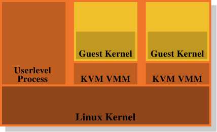

Advertisement
Front, Kernel, Security, Distributions, Development. See your byline here on LWN.net.
Weekly Edition
Return to the Front page
| |||||||||||
Memory part 3: Virtual Memory
[Editor's note: this the third installment of Ulrich Drepper's "What
every programmer should know about memory" document; this section talks
about virtual memory, and TLB performance in particular. Those who have
not read part 1 and part 2 may wish to do so
now. As always, please send typo reports and the like to lwn@lwn.net
rather than posting them as comments here.]
4 Virtual MemoryThe virtual memory subsystem of a processor implements the virtual address spaces provided to each process. This makes each process think it is alone in the system. The list of advantages of virtual memory are described in detail elsewhere so they will not be repeated here. Instead this section concentrates on the actual implementation details of the virtual memory subsystem and the associated costs. A virtual address space is implemented by the Memory Management Unit (MMU) of the CPU. The OS has to fill out the page table data structures, but most CPUs do the rest of the work themselves. This is actually a pretty complicated mechanism; the best way to understand it is to introduce the data structures used to describe the virtual address space. The input to the address translation performed by the MMU is a virtual address. There are usually few—if any—restrictions on its value. Virtual addresses are 32-bit values on 32-bit systems, and 64-bit values on 64-bit systems. On some systems, for instance x86 and x86-64, the addresses used actually involve another level of indirection: these architectures use segments which simply cause an offset to be added to every logical address. We can ignore this part of address generation, it is trivial and not something that programmers have to care about with respect to performance of memory handling. {Segment limits on x86 are performance-relevant but that is another story.}
4.1 Simplest Address TranslationThe interesting part is the translation of the virtual address to a physical address. The MMU can remap addresses on a page-by-page basis. Just as when addressing cache lines, the virtual address is split into distinct parts. These parts are used to index into various tables which are used in the construction of the final physical address. For the simplest model we have only one level of tables.
Figure 4.1 shows how the different parts of the virtual address are used. A top part is used to select an entry in a Page Directory; each entry in that directory can be individually set by the OS. The page directory entry determines the address of a physical memory page; more than one entry in the page directory can point to the same physical address. The complete physical address of the memory cell is determined by combining the page address from the page directory with the low bits from the virtual address. The page directory entry also contains some additional information about the page such as access permissions. The data structure for the page directory is stored in memory. The OS has to allocate contiguous physical memory and store the base address of this memory region in a special register. The appropriate bits of the virtual address are then used as an index into the page directory, which is actually an array of directory entries. For a concrete example, this is the layout used for 4MB pages on x86 machines. The Offset part of the virtual address is 22 bits in size, enough to address every byte in a 4MB page. The remaining 10 bits of the virtual address select one of the 1024 entries in the page directory. Each entry contains a 10 bit base address of a 4MB page which is combined with the offset to form a complete 32 bit address.
4.2 Multi-Level Page Tables4MB pages are not the norm, they would waste a lot of memory since many operations an OS has to perform require alignment to memory pages. With 4kB pages (the norm on 32-bit machines and, still, often on 64-bit machines), the Offset part of the virtual address is only 12 bits in size. This leaves 20 bits as the selector of the page directory. A table with 220 entries is not practical. Even if each entry would be only 4 bytes the table would be 4MB in size. With each process potentially having its own distinct page directory much of the physical memory of the system would be tied up for these page directories. The solution is to use multiple levels of page tables. These can then represent a sparse huge page directory where regions which are not actually used do not require allocated memory. The representation is therefore much more compact, making it possible to have the page tables for many processes in memory without impacting performance too much. Today the most complicated page table structures comprise four levels. Figure 4.2 shows the schematics of such an implementation.
The virtual address is, in this example, split into at least five parts. Four of these parts are indexes into the various directories. The level 4 directory is referenced using a special-purpose register in the CPU. The content of the level 4 to level 2 directories is a reference to next lower level directory. If a directory entry is marked empty it obviously need not point to any lower directory. This way the page table tree can be sparse and compact. The entries of the level 1 directory are, just like in Figure 4.1, partial physical addresses, plus auxiliary data like access permissions. To determine the physical address corresponding to a virtual address the processor first determines the address of the highest level directory. This address is usually stored in a register. Then the CPU takes the index part of the virtual address corresponding to this directory and uses that index to pick the appropriate entry. This entry is the address of the next directory, which is indexed using the next part of the virtual address. This process continues until it reaches the level 1 directory, at which point the value of the directory entry is the high part of the physical address. The physical address is completed by adding the page offset bits from the virtual address. This process is called page tree walking. Some processors (like x86 and x86-64) perform this operation in hardware, others need assistance from the OS. Each process running on the system might need its own page table tree. It is possible to partially share trees but this is rather the exception. It is therefore good for performance and scalability if the memory needed by the page table trees is as small as possible. The ideal case for this is to place the used memory close together in the virtual address space; the actual physical addresses used do not matter. A small program might get by with using just one directory at each of levels 2, 3, and 4 and a few level 1 directories. On x86-64 with 4kB pages and 512 entries per directory this allows the addressing of 2MB with a total of 4 directories (one for each level). 1GB of contiguous memory can be addressed with one directory for levels 2 to 4 and 512 directories for level 1. Assuming all memory can be allocated contiguously is too simplistic, though. For flexibility reasons the stack and the heap area of a process are, in most cases, allocated at pretty much opposite ends of the address space. This allows either area to grow as much as possible if needed. This means that there are most likely two level 2 directories needed and correspondingly more lower level directories. But even this does not always match current practice. For security reasons the various parts of an executable (code, data, heap, stack, DSOs, aka shared libraries) are mapped at randomized addresses [nonselsec]. The randomization extends to the relative position of the various parts; that implies that the various memory regions in use in a process are widespread throughout the virtual address space. By applying some limits to the number of bits of the address which are randomized the range can be restricted, but it certainly, in most cases, will not allow a process to run with just one or two directories for levels 2 and 3. If performance is really much more important than security, randomization can be turned off. The OS will then usually at least load all DSOs contiguously in virtual memory.
4.3 Optimizing Page Table AccessAll the data structures for the page tables are kept in the main memory; this is where the OS constructs and updates the tables. Upon creation of a process or a change of a page table the CPU is notified. The page tables are used to resolve every virtual address into a physical address using the page table walk described above. More to the point: at least one directory for each level is used in the process of resolving a virtual address. This requires up to four memory accesses (for a single access by the running process) which is slow. It is possible to treat these directory table entries as normal data and cache them in L1d, L2, etc., but this would still be far too slow. From the earliest days of virtual memory, CPU designers have used a different optimization. A simple computation can show that only keeping the directory table entries in the L1d and higher cache would lead to horrible performance. Each absolute address computation would require a number of L1d accesses corresponding to the page table depth. These accesses cannot be parallelized since they depend on the previous lookup's result. This alone would, on a machine with four page table levels, require at the very least 12 cycles. Add to that the probability of an L1d miss and the result is nothing the instruction pipeline can hide. The additional L1d accesses also steal precious bandwidth to the cache. So, instead of just caching the directory table entries, the complete computation of the address of the physical page is cached. For the same reason that code and data caches work, such a cached address computation is effective. Since the page offset part of the virtual address does not play any part in the computation of the physical page address, only the rest of the virtual address is used as the tag for the cache. Depending on the page size this means hundreds or thousands of instructions or data objects share the same tag and therefore same physical address prefix. The cache into which the computed values are stored is called the Translation Look-Aside Buffer (TLB). It is usually a small cache since it has to be extremely fast. Modern CPUs provide multi-level TLB caches, just as for the other caches; the higher-level caches are larger and slower. The small size of the L1TLB is often made up for by making the cache fully associative, with an LRU eviction policy. Recently, this cache has been growing in size and, in the process, was changed to be set associative. As a result, it might not be the oldest entry which gets evicted and replaced whenever a new entry has to be added. As noted above, the tag used to access the TLB is a part of the virtual address. If the tag has a match in the cache, the final physical address is computed by adding the page offset from the virtual address to the cached value. This is a very fast process; it has to be since the physical address must be available for every instruction using absolute addresses and, in some cases, for L2 look-ups which use the physical address as the key. If the TLB lookup misses the processor has to perform a page table walk; this can be quite costly. Prefetching code or data through software or hardware could implicitly prefetch entries for the TLB if the address is on another page. This cannot be allowed for hardware prefetching because the hardware could initiate page table walks that are invalid. Programmers therefore cannot rely on hardware prefetching to prefetch TLB entries. It has to be done explicitly using prefetch instructions. TLBs, just like data and instruction caches, can appear in multiple levels. Just as for the data cache, the TLB usually appears in two flavors: an instruction TLB (ITLB) and a data TLB (DTLB). Higher-level TLBs such as the L2TLB are usually unified, as is the case with the other caches.
4.3.1 Caveats Of Using A TLB The TLB is a processor-core global resource. All threads and processes executed on the processor core use the same TLB. Since the translation of virtual to physical addresses depends on which page table tree is installed, the CPU cannot blindly reuse the cached entries if the page table is changed. Each process has a different page table tree (but not the threads in the same process) as does the kernel and the VMM (hypervisor) if present. It is also possible that the address space layout of a process changes. There are two ways to deal with this problem:
In the first case the TLB is flushed whenever a context switch is performed. Since, in most OSes, a switch from one thread/process to another one requires executing some kernel code, TLB flushes are restricted to entering and leaving the kernel address space. On virtualized systems it also happens when the kernel has to call the VMM and on the way back. If the kernel and/or VMM does not have to use virtual addresses, or can reuse the same virtual addresses as the process or kernel which made the system/VMM call, the TLB only has to be flushed if, upon leaving the kernel or VMM, the processor resumes execution of a different process or kernel. Flushing the TLB is effective but expensive. When executing a system call, for instance, the kernel code might be restricted to a few thousand instructions which touch, perhaps, a handful of new pages (or one huge page, as is the case for Linux on some architectures). This work would replace only as many TLB entries as pages are touched. For Intel's Core2 architecture with its 128 ITLB and 256 DTLB entries, a full flush would mean that more than 100 and 200 entries (respectively) would be flushed unnecessarily. When the system call returns to the same process, all those flushed TLB entries could be used again, but they will be gone. The same is true for often-used code in the kernel or VMM. On each entry into the kernel the TLB has to be filled from scratch even though the page tables for the kernel and VMM usually do not change and, therefore, TLB entries could, in theory, be preserved for a very long time. This also explains why the TLB caches in today's processors are not bigger: programs most likely will not run long enough to fill all these entries.
This fact, of course, did not escape the CPU architects. One possibility to optimize the cache flushes is to individually invalidate TLB entries. For instance, if the kernel code and data falls into a specific address range, only the pages falling into this address range have to evicted from the TLB. This only requires comparing tags and, therefore, is not very expensive. This method is also useful in case a part of the address space is changed, for instance, through a call to munmap. A much better solution is to extend the tag used for the TLB access. If, in addition to the part of the virtual address, a unique identifier for each page table tree (i.e., a process's address space) is added, the TLB does not have to be completely flushed at all. The kernel, VMM, and the individual processes all can have unique identifiers. The only issue with this scheme is that the number of bits available for the TLB tag is severely limited, while the number of address spaces is not. This means some identifier reuse is necessary. When this happens the TLB has to be partially flushed (if this is possible). All entries with the reused identifier must be flushed but this is, hopefully, a much smaller set.
This extended TLB tagging is of general advantage when multiple processes are running on the system. If the memory use (and hence TLB entry use) of each of the runnable processes is limited, there is a good chance the most recently used TLB entries for a process are still in the TLB when it gets scheduled again. But there are two additional advantages:
Some processors have, for some time, implemented these extended tags. AMD introduced a 1-bit tag extension with the Pacifica virtualization extensions. This 1-bit Address Space ID (ASID) is, in the context of virtualization, used to distinguish the VMM's address space from that of the guest domains. This allows the OS to avoid flushing the guest's TLB entries every time the VMM is entered (for instance, to handle a page fault) or the VMM's TLB entries when control returns to the guest. The architecture will allow the use of more bits in the future. Other mainstream processors will likely follow suit and support this feature.
4.3.2 Influencing TLB Performance There are a couple of factors which influence TLB performance. The first is the size of the pages. Obviously, the larger a page is, the more instructions or data objects will fit into it. So a larger page size reduces the overall number of address translations which are needed, meaning that fewer entries in the TLB cache are needed. Most architectures allow the use of multiple different page sizes; some sizes can be used concurrently. For instance, the x86/x86-64 processors have a normal page size of 4kB but they can also use 4MB and 2MB pages respectively. IA-64 and PowerPC allow sizes like 64kB as the base page size. The use of large page sizes brings some problems with it, though. The memory regions used for the large pages must be contiguous in physical memory. If the unit size for the administration of physical memory is raised to the size of the virtual memory pages, the amount of wasted memory will grow. All kinds of memory operations (like loading executables) require alignment to page boundaries. This means, on average, that each mapping wastes half the page size in physical memory for each mapping. This waste can easily add up; it thus puts an upper limit on the reasonable unit size for physical memory allocation. It is certainly not practical to increase the unit size to 2MB to accommodate large pages on x86-64. This is just too large a size. But this in turn means that each large page has to be comprised of many smaller pages. And these small pages have to be contiguous in physical memory. Allocating 2MB of contiguous physical memory with a unit page size of 4kB can be challenging. It requires finding a free area with 512 contiguous pages. This can be extremely difficult (or impossible) after the system runs for a while and physical memory becomes fragmented. On Linux it is therefore necessary to pre-allocate these big pages at system start time using the special hugetlbfs filesystem. A fixed number of physical pages are reserved for exclusive use as big virtual pages. This ties down resources which might not always be used. It also is a limited pool; increasing it normally means restarting the system. Still, huge pages are the way to go in situations where performance is a premium, resources are plenty, and cumbersome setup is not a big deterrent. Database servers are an example. Increasing the minimum virtual page size (as opposed to optional big pages) has its problems, too. Memory mapping operations (loading applications, for example) must conform to these page sizes. No smaller mappings are possible. The location of the various parts of an executable have, for most architectures, a fixed relationship. If the page size is increased beyond what has been taken into account when the executable or DSO was built, the load operation cannot be performed. It is important to keep this limitation in mind. Figure 4.3 shows how the alignment requirements of an ELF binary can be determined. It is encoded in the ELF program header.
$ eu-readelf -l /bin/ls Program Headers: Type Offset VirtAddr PhysAddr FileSiz MemSiz Flg Align ... LOAD 0x000000 0x0000000000400000 0x0000000000400000 0x0132ac 0x0132ac R E 0x200000 LOAD 0x0132b0 0x00000000006132b0 0x00000000006132b0 0x001a71 0x001a71 RW 0x200000 ... Figure 4.3: ELF Program Header Indicating Alignment Requirements In this example, an x86-64 binary, the value is 0x200000 = 2,097,152 = 2MB which corresponds to the maximum page size supported by the processor. There is a second effect of using larger page sizes: the number of levels of the page table tree is reduced. Since the part of the virtual address corresponding to the page offset increases, there are not that many bits left which need to be handled through page directories. This means that, in case of a TLB miss, the amount of work which has to be done is reduced. Beyond using large page sizes, it is possible to reduce the number of TLB entries needed by moving data which is used at the same time to fewer pages. This is similar to some optimizations for cache use we talked about above. Only now the alignment required is large. Given that the number of TLB entries is quite small this can be an important optimization.
4.4 Impact Of VirtualizationVirtualization of OS images will become more and more prevalent; this means another layer of memory handling is added to the picture. Virtualization of processes (basically jails) or OS containers do not fall into this category since only one OS is involved. Technologies like Xen or KVM enable—with or without help from the processor—the execution of independent OS images. In these situations there is one piece of software alone which directly controls access to the physical memory.
In the case of Xen (see Figure 4.4) the Xen VMM is that piece of software. The VMM does not implement many of the other hardware controls itself, though. Unlike VMMs on other, earlier systems (and the first release of the Xen VMM) the hardware outside of memory and processors is controlled by the privileged Dom0 domain. Currently, this is basically the same kernel as the unprivileged DomU kernels and, as far as memory handling is concerned, they do not differ. Important here is that the VMM hands out physical memory to the Dom0 and DomU kernels which, themselves, then implement the usual memory handling as if they were running directly on a processor. To implement the separation of the domains which is required for the virtualization to be complete, the memory handling in the Dom0 and DomU kernels does not have unrestricted access to physical memory. The VMM does not hand out memory by giving out individual physical pages and letting the guest OSes handle the addressing; this would not provide any protection against faulty or rogue guest domains. Instead, the VMM creates its own page table tree for each guest domain and hands out memory using these data structures. The good thing is that access to the administrative information of the page table tree can be controlled. If the code does not have appropriate privileges it cannot do anything. This access control is exploited in the virtualization Xen provides, regardless of whether para- or hardware (aka full) virtualization is used. The guest domains construct their page table trees for each process in a way which is intentionally quite similar for para- and hardware virtualization. Whenever the guest OS modifies its page tables the VMM is invoked. The VMM then uses the updated information in the guest domain to update its own shadow page tables. These are the page tables which are actually used by the hardware. Obviously, this process is quite expensive: each modification of the page table tree requires an invocation of the VMM. While changes to the memory mapping are not cheap without virtualization they become even more expensive now. The additional costs can be really large, considering that the changes from the guest OS to the VMM and back themselves are already quite expensive. This is why the processors are starting to have additional functionality to avoid the creation of shadow page tables. This is good not only because of speed concerns but it also reduces memory consumption by the VMM. Intel has Extended Page Tables (EPTs) and AMD calls it Nested Page Tables (NPTs). Basically both technologies have the page tables of the guest OSes produce virtual physical addresses. These addresses must then be further translated, using the per-domain EPT/NPT trees, into actual physical addresses. This will allow memory handling at almost the speed of the no-virtualization case since most VMM entries for memory handling are removed. It also reduces the memory use of the VMM since now only one page table tree for each domain (as opposed to process) has to be maintained. The results of the additional address translation steps are also stored in the TLB. That means the TLB does not store the virtual physical address but, instead, the complete result of the lookup. It was already explained that AMD's Pacifica extension introduced the ASID to avoid TLB flushes on each entry. The number of bits for the ASID is one in the initial release of the processor extensions; this is just enough to differentiate VMM and guest OS. Intel has virtual processor IDs (VPIDs) which serve the same purpose, only there are more of them. But the VPID is fixed for each guest domain and therefore it cannot be used to mark separate processes and avoid TLB flushes at that level, too. The amount of work needed for each address space modification is one problem with virtualized OSes. There is another problem inherent in VMM-based virtualization, though: there is no way around having two layers of memory handling. But memory handling is hard (especially when taking complications like NUMA into account, see Section 5). The Xen approach of using a separate VMM makes optimal (or even good) handling hard since all the complications of a memory management implementation, including “trivial” things like discovery of memory regions, must be duplicated in the VMM. The OSes have fully-fledged and optimized implementations; one really wants to avoid duplicating them.
 This is why carrying the VMM/Dom0 model to its conclusion is such an attractive alternative. Figure 4.5 shows how the KVM Linux kernel extensions try to solve the problem. There is no separate VMM running directly on the hardware and controlling all the guests; instead, a normal Linux kernel takes over this functionality. This means the complete and sophisticated memory handling functionality in the Linux kernel is used to manage the memory of the system. Guest domains run alongside the normal user-level processes in what the creators call “guest mode”. The virtualization functionality, para- or full virtualization, is controlled by another user-level process, the KVM VMM. This is just another process which happens to control a guest domain using the special KVM device the kernel implements. The benefit of this model over the separate VMM of the Xen model is that, even though there are still two memory handlers at work when guest OSes are used, there only needs to be one implementation, that in the Linux kernel. It is not necessary to duplicate the same functionality in another piece of code like the Xen VMM. This leads to less work, fewer bugs, and, perhaps, less friction where the two memory handlers touch since the memory handler in a Linux guest makes the same assumptions as the memory handler in the outer Linux kernel which runs on the bare hardware. Overall, programmers must be aware that, with virtualization used, the cost of memory operations is even higher than without virtualization. Any optimization which reduces this work will pay off even more in virtualized environments. Processor designers will, over time, reduce the difference more and more through technologies like EPT and NPT but it will never completely go away. (Log in to post comments)
Memory part 3: Virtual Memory Posted Oct 9, 2007 17:06 UTC (Tue) by cborni (subscriber, #12949) [Link] > Today the most complicated page table structures comprise four levels.> Figure 4.2 shows the schematics of such an implementation."
This is true for Linux and x86. I know at least one system that support up
Memory part 3: Virtual Memory Posted Oct 9, 2007 17:40 UTC (Tue) by bluefoxicy (subscriber, #25366) [Link] > If performance is really much more important than security, randomization> can be turned off. The OS will then usually at least load all DSOs > contiguously in virtual memory.
Normally (i.e. under PaX and I think Exec Shield, but not OpenBSD), the base of the Stack and mmap() (i.e. DSO load area) regions gets randomized. Beyond this, the kernel continues to select virtual addresses as normal; pretty much between identical runs, a DSO wll load at ${MMAP_BASE} - ${OFFSET}, where ${OFFSET} remains constant between runs for the given DSO and ${MMAP_BASE} changes each time.
The heap and (for PIEs) executable base can also change in this manner.
Linux vs page coloring Posted Oct 9, 2007 19:51 UTC (Tue) by jreiser (subscriber, #11027) [Link] There is an important performance interaction of cache, TLB, and OS that deserves more mention. If the data cache is less than fully associative, and if not all the address bits used to select a cache line designate the same page, then the mapping from virtual page to physical frame matters. With respect to cache performance in such a machine, one page frame is not just as good as another. This is related to hugetlbfs in section 4.3.2 Influencing TLB Performance, and was mentioned in Section 3.3.4 Multi-Processor Support (part 2, previous installment):It might be that cache lines in all logical pages are mapped to the same cache sets, leaving much of the cache unused. If anything, it is the job of the OS to arrange that this does not happen too often. Consider an appplication which scans more than a couple arrays that are more than a few hundred pages long. Under Linux on current x86 hardware with 4KB pages, 4x or 8x associativity, 32- or 64-byte lines, and 256KB or more total cache size, then the runtime can vary easily by 5% between consecutive runs, and I have seen variations of 35%. This is due to the kernel not paying any attention to page placement in the cache, with the result that page aliasing can vary widely. Because the kernel does not implement "page coloring", then hugetlbfs is the oft-mentioned remedy. Yet an actual working example is hard to find. The replies to my earlier query "Show me the code!" missed the point. The mmap is easy, but how does one create the hugetlbfs filesystem in the first place?
Linux vs page coloring Posted Oct 10, 2007 1:44 UTC (Wed) by ncm (subscriber, #165) [Link] Somebody mentioned a libhugetlbfs. The HOWTO there doesn't offer any hints on how or where to mount it. Presumably current mount(8) knows the fs type, but where should it go? Maybe it doesn't matter, because the lib will find it wherever it is?
Linux vs page coloring Posted Oct 13, 2007 15:04 UTC (Sat) by kapheine (subscriber, #26127) [Link] I haven't tried it, but Documentation/vm/hugetlbpage.txt in the Linux source explains how to mount it.
Memory part 3: Virtual Memory Posted Oct 9, 2007 20:14 UTC (Tue) by kleptog (subscriber, #1183) [Link] I wonder if it's worth pointing out that because the kernel gets loaded right at the beginning it can arrange a single large 4MB TLB page for itself, whereas modules loaded later on can't take advantage of this.
Rothko? Posted Oct 10, 2007 5:10 UTC (Wed) by proski (subscriber, #104) [Link] Is it just me, or was the last diagram inspired by the works of Mark Rothko? :)
Memory part 3: Virtual Memory Posted Oct 11, 2007 11:12 UTC (Thu) by addw (subscriber, #1771) [Link] This means, on average, that each mapping wastes half the page size in physical memory for each mapping. Is that really correct ? If there is an allocation several pages long then the last page will be, on average, 1/2 wasted. Look at the example a bit later, the first memory size is 0x0132ac (78508 decimal) which is 19 (4k sized) pages and 684 bytes, so 3412 out of 78508 bytes wasted = 4%.
What's your problem then ? Posted Oct 11, 2007 19:59 UTC (Thu) by khim (subscriber, #9252) [Link] If there is an allocation several pages long then the last page will be, on average, 1/2 wasted, or, in other words, each mapping wastes half the page size in physical memory for each mapping. You've said the same thing Drepper said but in different words as far as I can see...
What's your problem then ? Posted Oct 11, 2007 23:25 UTC (Thu) by im14u2c (subscriber, #5246) [Link] There's a pretty big difference between the "last page" of "an allocation several pages long", and "each mapping". Each page has a mapping, and so the allocation mentioned has multiple mappings associated with it because it involves multiple pages. Suppose I allocate 62K, and I need to carve it into 4K pages. I end up allocating 64K total (16 pages). 15 of the 16 pages are fully utilized, and the last page is half-wasted. Consider an allocation of N bytes that does not share pages with any other allocation--for example, an allocation via mmap.
The amount of wasted bytes depends on the distribution of N. As N grows larger (and the number of mappings per allocation goes up), the number of wasted bytes per mapping goes down. (And yes, that's pseudo-code. The actual C code to compute those quantities isn't much different, but it's a little noisier.)
What's your problem then ? Posted Oct 15, 2007 13:13 UTC (Mon) by mgedmin (subscriber, #34497) [Link] I do not think the work "mapping" means what you think it means, at least in the context of this article.
Here's what the manual page of mmap says: "mmap() creates a new mapping in the virtual address space of the calling process. The starting address for the new mapping is specified in start. The length argument specifies the length of the mapping."
That's how I understand "mapping": a contiguous range of virtual memory addresses in the address space of a particular process.
Memory part 3: Virtual Memory Posted Oct 11, 2007 23:32 UTC (Thu) by im14u2c (subscriber, #5246) [Link] If it were, then it seems virtual memory is a recipe for wasting half your memory. I think what was meant was "each contiguous range that is mapped." There seems to be a shorthand amongst some folk to call what corresponds to a row in /proc/<PID>/maps "a mapping," when indeed it is typically composed of multiple pages, and is really multiple mappings that are contiguous in virtual address space. For example, a quick peek with "cat /proc/self/maps" here at work shows: $ cat /proc/self/maps 00101000-00227000 r-xp 00000000 03:02 1196106 /lib/tls/libc-2.3.4.so 00227000-00229000 r-xp 00125000 03:02 1196106 /lib/tls/libc-2.3.4.so 00229000-0022b000 rwxp 00127000 03:02 1196106 /lib/tls/libc-2.3.4.so 0022b000-0022d000 rwxp 0022b000 00:00 0 0055c000-00572000 r-xp 00000000 03:02 1196104 /lib/ld-2.3.4.so 00572000-00573000 r-xp 00015000 03:02 1196104 /lib/ld-2.3.4.so 00573000-00574000 rwxp 00016000 03:02 1196104 /lib/ld-2.3.4.so 08048000-0804c000 r-xp 00000000 03:02 967851 /bin/cat 0804c000-0804d000 rwxp 00003000 03:02 967851 /bin/cat 0804d000-0806e000 rwxp 0804d000 00:00 0 b7fde000-b7fe0000 rwxp b7fde000 00:00 0 bfffd000-c0000000 rwxp bfffd000 00:00 0 ffffe000-fffff000 ---p 00000000 00:00 0 Under the shorthand nomenclature, that's 13 mappings. Clearly, far more than 13 pages are involved.
definition of mapping Posted Oct 12, 2007 17:07 UTC (Fri) by giraffedata (subscriber, #1954) [Link] It's not even shorthand; it's just the nonspecific meaning of the word "mapping." Relating 10 virtual pages to 10 real pages is a mapping; relating one of those real pages to one of those real pages is also a mapping. One could legitimately call an entire page table a mapping.The text elides a great deal about the process of loading an executable; if it gave proper context, it would probably be more clear that it isn't referring to individual page mappings.
definition of mapping Posted Oct 12, 2007 17:17 UTC (Fri) by im14u2c (subscriber, #5246) [Link] Fair enough. I try to be precise myself when I can. I personally think of the three notions of "mapping" you have as "page mapping," "mapped range" and "memory map", though I can easily see imperfections in those names. :-)
Memory part 3: Virtual Memory Posted Oct 20, 2007 20:04 UTC (Sat) by dlang (subscriber, #313) [Link] Quote: If performance is really much more important than security, randomization can be turned off. The OS will then usually at least load all DSOs contiguously in virtual memory. it would be useful to have some indication of what the performance cost of this is. are we talking 5% or 0.0005% (I know it will depend on the situation, but biggest-difference numbers would give a starting point)
TLB flushes Posted Oct 23, 2007 21:34 UTC (Tue) by rene.herman (guest, #48617) [Link] In 4.3.1, "Caveats of using a TLB", we have a mysterious paragraph with the line "When the system call returns to the same process, all those flushed TLB entries could be used again, but they will be gone." What is Ulrich specifically talking about here? If Linux -- it fundamentally does not need to flush the TLB when just switching from/to the kernel. A task switch needs a flush, but sharing the virtual address-space between user and kernel as Linux does is exactly _because_ with it, you don't need a TLB flush. Needing one is the costly aspect of the (IA32) 4G/4G patches. With the split, that's what you save.
|
|||||||||||